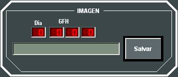
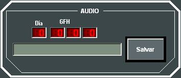

Fotos del Ejercicio
Pulsando el los botones Foto y Audio de la Barra de Tareas, el instructor puede abrir los diálogos de Fotos Tácticas y de Audio. Mediante estos diálogos el Instructor puede asignar una marca a un instante de interés en el transcurso de la Ejecución del Ejercicio. Esta marcas (fotos) son empleadas en la Herramienta de Análisis, durante la Reproducción de un Ejercicio o para componer la Exposición de un Ejercicio (ver Manual de Análisis).
Las Fotos Tácticas realizadas por el operador son almacenadas con una descripción que facilite su identificación durante la Repetición del Ejercicio, y una imagen de capturada de la Presentación Táctica en el instante en el que se realiza la Foto.

Las Fotos de Audio realizadas por el operador son almacenadas también con una descripción que facilite su identificación durante la Repetición del Ejercicio, y un fichero de sonido correspondiente al buffer de audio de las redes que estén en escucha. La duración del audio almacenado depende de cómo se haya configurado la grabación del audio en Galeon.ini.
